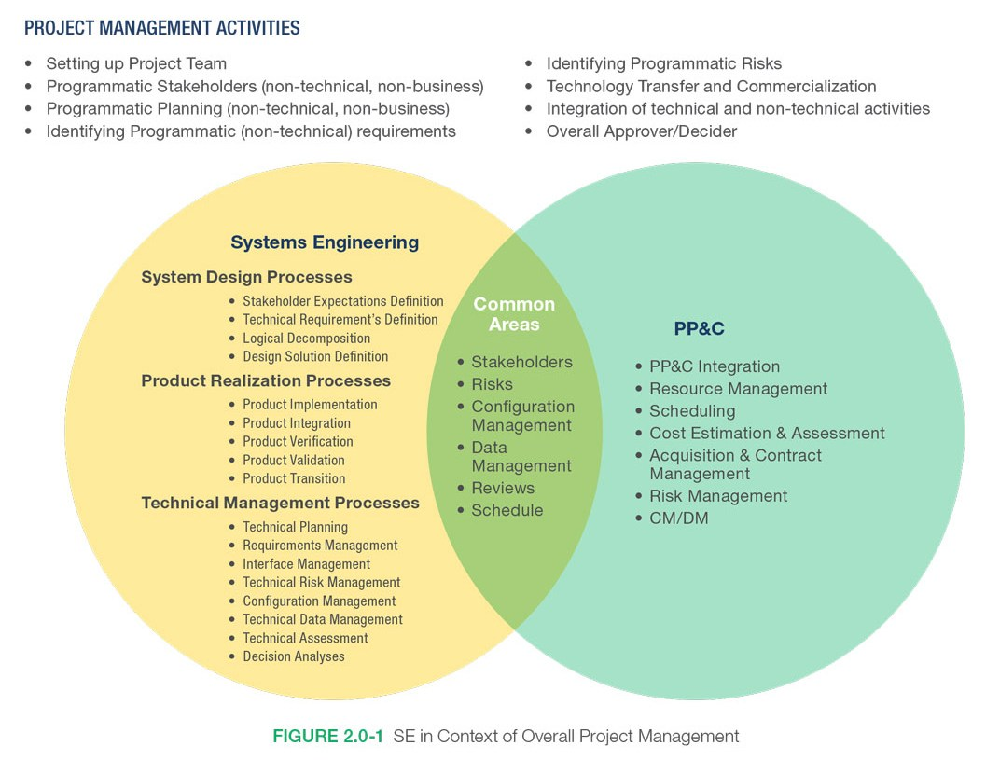
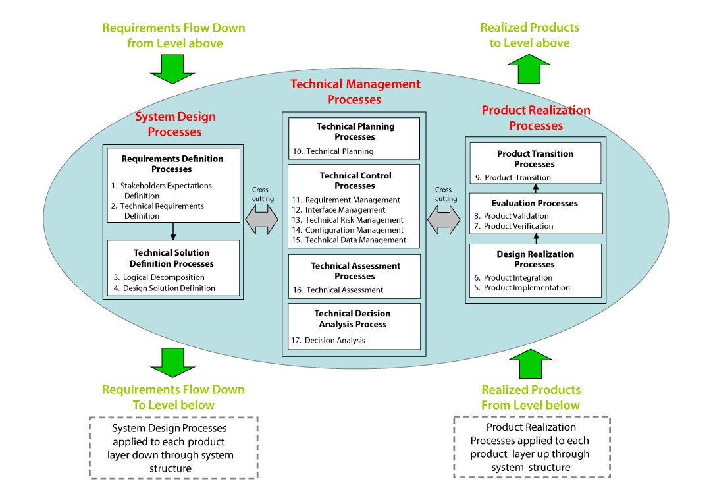
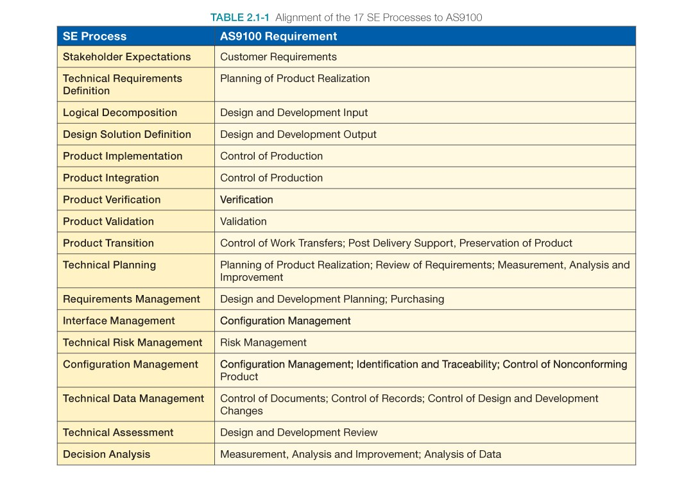
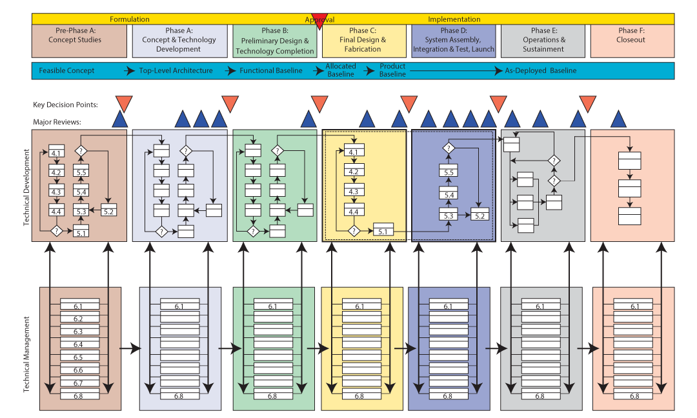
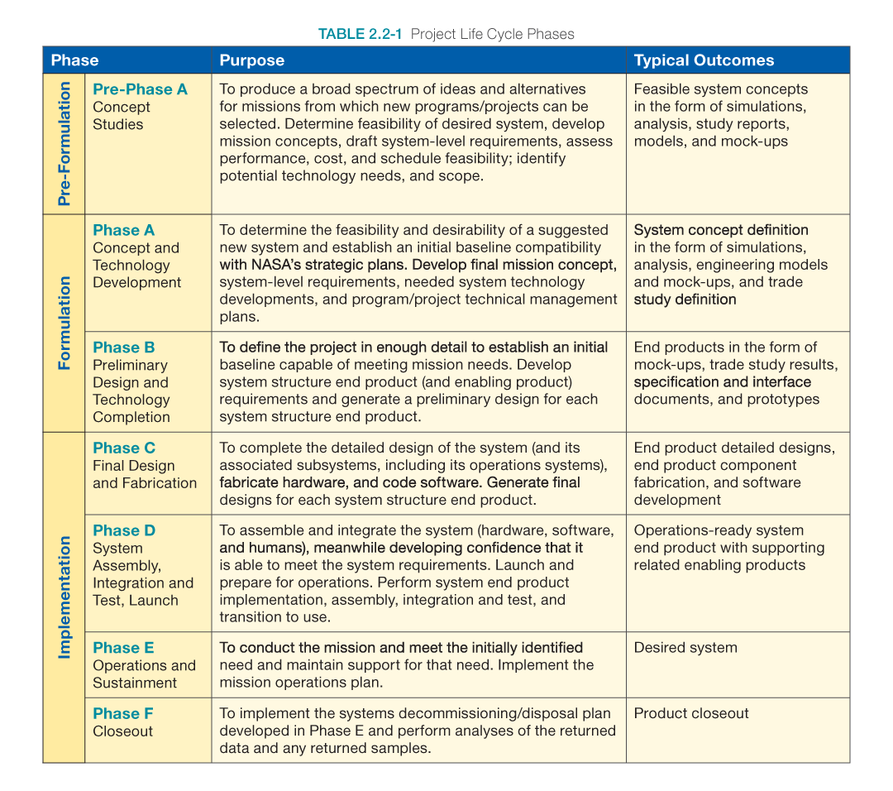
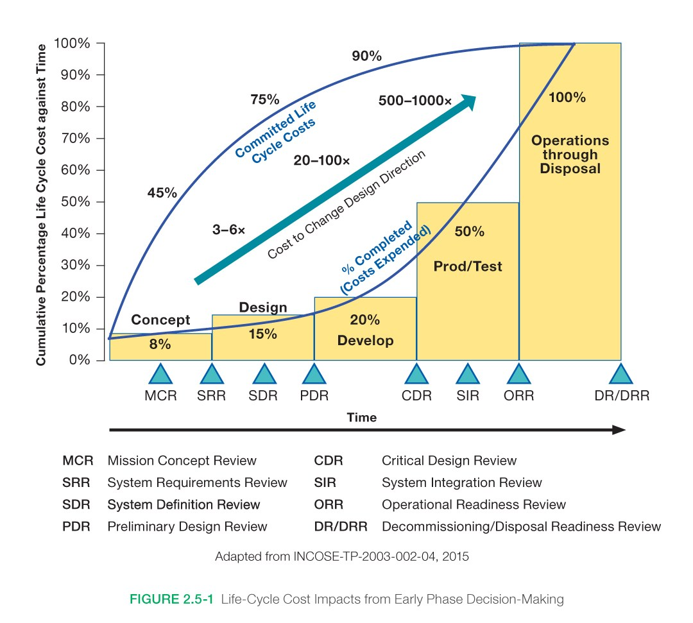
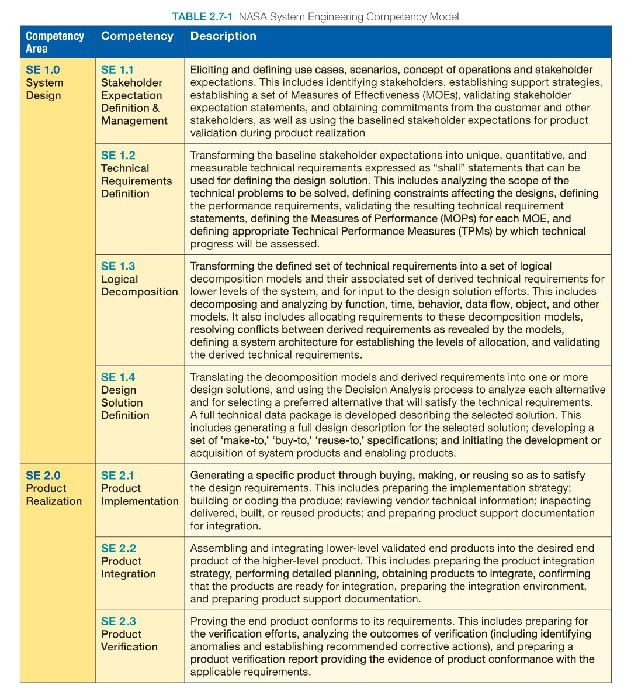
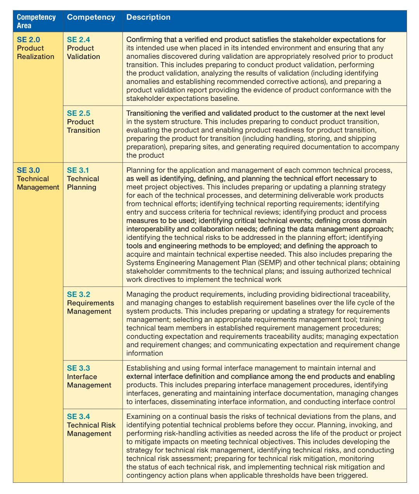
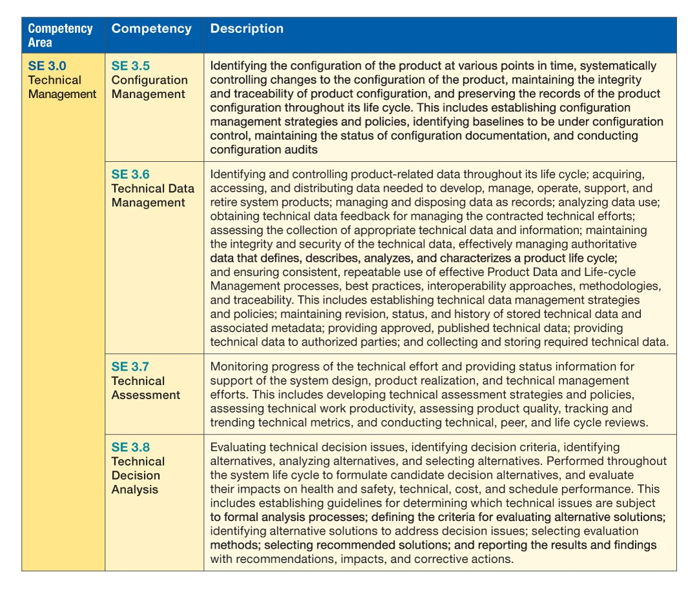

2.0 Основы системной инженерии
Перевод раздела 2.0 NASA Systems Engineering Handbook, NASA/SP-2016-6105 Rev 2. В оригинале системная инженерия рассматривается как междисциплинарный способ проектировать систему целиком, балансируя требования, стоимость, график, риск и ожидаемый результат.
Оригинал раздела на сайте NASA (английский) · Полный PDF руководства NASA (английский)
Введение к разделу 2.0
В NASA «системная инженерия» определяется как методичный междисциплинарный подход к проектированию, созданию, техническому управлению, эксплуатации и выводу системы из эксплуатации. «Система» — это совокупность элементов, которые совместно обеспечивают способность, необходимую для удовлетворения потребности. К этим элементам относятся аппаратные и программные средства, оборудование, инфраструктура и помещения, персонал, процессы и процедуры — всё, что требуется для получения результата на уровне системы.
Результаты включают качества, свойства, характеристики, функции, поведение и производительность системы. Ценность системы в целом, сверх вклада отдельных частей, главным образом создают связи между этими частями — то, как они соединены. Такой взгляд помогает видеть «общую картину» при принятии технических решений.
Системная инженерия помогает выполнить требования заинтересованных сторон к функциональным, физическим и эксплуатационным характеристикам в предполагаемой среде применения, на протяжении запланированного жизненного цикла системы и при ограничениях по стоимости, графику и другим ресурсам. Методология также помогает сдерживать стоимость жизненного цикла. Иными словами, системная инженерия — логичный способ мыслить.
Системная инженерия — искусство и наука разработки работоспособной системы, которая выполняет требования при часто противоречащих друг другу ограничениях. Это целостная дисциплина, объединяющая разные направления: вклад инженеров-конструкторов, электротехников, разработчиков механизмов, энергетиков, специалистов по человеческому фактору и многих других оценивается и балансируется, чтобы получить согласованную систему, в которой не доминирует точка зрения одной дисциплины.
Системная инженерия направлена на безопасное и сбалансированное проектное решение при конфликтующих интересах и ограничениях. Системному инженеру важно уметь определять, какие оценки помогут улучшить систему в целом, и не оптимизировать одну систему или подсистему за счёт другой. При этом нужно постоянно проверять, будут ли достигнуты цели системы в эксплуатации. Искусство здесь — понимать, где и когда нужно углубить анализ.
Специалистов с такими навыками обычно называют системными инженерами. У них могут быть и другие должности: ведущий системный инженер, технический руководитель, главный инженер. В этом руководстве используется общий термин «системный инженер».
Точные обязанности системного инженера зависят от размера и сложности проекта, а также от его фазы. В крупном проекте может работать один или несколько системных инженеров. В небольшом проекте часть этих практик иногда выполняет руководитель проекта. Но сами функции системной инженерии должны выполняться независимо от того, кто именно за них отвечает.
Ведущий системный инженер отвечает за то, чтобы система технически отвечала определённым потребностям и требованиям и чтобы применялся надлежащий системный подход. Он следит за работой инженерной команды, направляет и согласует задачи, обеспечивает обмен информацией и отслеживает их выполнение. Системный инженер анализирует техническую сторону проекта и развитие системы от концепции до продукта. В процессе участвует вся техническая команда.
Системный инженер обычно играет ключевую роль в разработке концепции операций (ConOps) и архитектуры системы: определяет границы системы, формулирует и распределяет требования, анализирует компромиссы между вариантами проекта, балансирует технические риски между системами, определяет и оценивает интерфейсы, контролирует верификацию и валидацию. Это лишь часть его задач.
Системный инженер, как правило, руководит техническим планированием и отвечает за подготовку многих технических планов, требований и спецификаций, документов по верификации и валидации, сертификационных комплектов и другой технической документации.
В целом системный инженер умеет находить баланс между организационными, стоимостными и техническими факторами в сложных системах. Он и поддерживающая его организация помогают функции планирования и контроля проекта (Project Planning and Control, PP&C) своевременно получать точные сведения о стоимости и графике технических работ. Системная инженерия связана с компромиссами и выбором: она рассматривает систему широко и сквозным образом, а не только с позиции одной дисциплины.
Системная инженерия помогает не только «правильно выполнить проект», то есть выполнить требования, но и «выбрать правильное проектное решение» — обеспечить цели эксплуатации и оправдать ожидания заинтересованных сторон.
Системная инженерия играет важную роль в организации проекта. Управление проектом включает три главные задачи: управление технической стороной, командой и стоимостью с графиком. Эти функции взаимосвязаны. Системная инженерия сосредоточена на технических характеристиках решений, включая их связь со стоимостью и графиком, и передаёт эту информацию руководителю проекта.
Функция планирования и контроля проекта отвечает за определение и контроль стоимости и графика. Руководитель проекта отвечает за команду и за то, чтобы проект поставил технически корректную систему в пределах бюджета и сроков. Между системной инженерией и планированием и контролем проекта есть области пересечения: системная инженерия предоставляет техническую информацию, а PP&C — программную, стоимостную информацию и данные о графике.
Это руководство сосредоточено на стороне системной инженерии. Описанные практики и процессы взяты из документа NPR 7123.1 «Процессы системной инженерии NASA и требования к ним». Далее каждый процесс рассматривается подробнее; в этом разделе дан обзор.

2.1 Общие технические процессы и SE Engine
В документе NPR 7123.1 выделены три группы общих технических процессов: проектирование системы, реализация продукта (Product Realization) и техническое управление. Их состав, взаимодействие и последовательность показаны в модели системной инженерии под названием «двигатель» (Systems Engineering Engine, SE Engine). Процессы этой модели применяются для разработки и создания конечных продуктов. В разделе рассматривается контекст применения 17 общих процессов системной инженерии, обязательных по NPR 7123.1.
Процессы проектирования системы, реализации продукта и технического управления подробно рассматриваются соответственно в главах 4.0, 5.0 и 6.0. Процессы 1–9 на схеме соответствуют работам по выполнению проекта. Процессы 10–17 — сквозные инструменты, которые помогают выполнять эти работы.

Процессы проектирования системы
Четыре процесса проектирования системы на рисунке помогают определить и зафиксировать ожидания заинтересованных сторон, сформировать и зафиксировать технические требования, разложить требования на логические и поведенческие модели, а затем преобразовать технические требования в проектное решение, которое отвечает зафиксированным ожиданиям заинтересованных сторон.
Эти процессы применяются к каждому продукту в структуре системы — сверху вниз, пока продукты на самых нижних ветвях не будут определены настолько, чтобы их можно было изготовить, приобрести или использовать повторно. Остальные продукты системы создаются посредством реализации или интеграции.
Процессы реализации продукта
Процессы реализации продукта применяются к каждому эксплуатационному продукту или продукту миссии в структуре системы, начиная с нижнего уровня и переходя к более крупным интегрированным продуктам.
Эти процессы помогают создать проектное решение для каждого продукта — приобрести, запрограммировать, построить или использовать повторно. Затем продукт проверяют на соответствие проектному решению, валидируют и передают на следующий иерархический уровень. Работа выполняется с учётом ожиданий заинтересованных сторон и соответствующей фазы жизненного цикла.
Процессы технического управления
Процессы технического управления помогают разработать и обновлять технические планы проекта, управлять коммуникацией между интерфейсами, оценивать продвижение относительно планов и требований к продуктам или услугам, контролировать техническое выполнение проекта и поддерживать принятие решений.
Итеративное и рекурсивное применение
Процессы модели SE Engine применяются итеративно и рекурсивно. В NPR 7123.1 итеративное применение определяется как повторное применение процесса к тому же продукту или набору продуктов, чтобы исправить обнаруженное несоответствие или другое отклонение от требований. Рекурсивное применение описывается как добавление ценности системе за счёт повторного применения процессов: для проектирования продуктов следующего, более низкого уровня или для создания продуктов верхнего уровня в структуре системы.
Процессы также повторяются на следующей фазе жизненного цикла, чтобы уточнить описание системы и выполнить критерии успешного завершения фазы. Технические процессы применяются итеративно и рекурсивно, чтобы разложить исходные концепции до уровня детализации, достаточного для реализации продукта технической командой. Затем те же процессы помогают интегрировать самый малый продукт в системы всё более высокого уровня, пока система или продукт не будут собраны, проверены, валидированы и переданы.
Подробный пример применения SE Engine приведён в документе NASA Expanded Guidance for Systems Engineering. Ссылка на ресурс: NASA Engineering Network, репозиторий документов.
AS9100 — широко применяемая стандартизированная система управления качеством в коммерческой аэрокосмической отрасли. Некоторые центры NASA решили пройти сертификацию по AS9100 и могут требовать, чтобы подрядчики соблюдали NPR 7123.1. В таблице 2.1-1 показано, как 17 процессов системной инженерии NASA соотносятся с AS9100.

2.2 Обзор SE Engine по фазам проекта

Рисунок 2.2-1 показывает, как модель SE Engine применяется в каждой фазе проекта — от Pre-Phase A до фазы F. Фазы жизненного цикла описаны в таблице 2.2-1. Это концептуальная схема; подробная версия приведена на отдельном плакате NASA.
Верхняя горизонтальная часть схемы показывает зрелость системы по мере движения проекта от осуществимой концепции к развёрнутой системе. Там же отмечены действия по фазам, ключевые точки принятия решений (Key Decision Points, KDP) и основные проектные обзоры.
Следующая полоса показывает процессы технической разработки — шаги 1–9 — в каждой фазе проекта. «Двигатель» системной инженерии проходит пять циклов от Pre-Phase A до фазы D. Руководство NASA делит техническую разработку в фазах C и D на части для более тщательного управления. На схеме эта область ограничена пунктиром. После перехода проекта к эксплуатации в фазе E и завершению в фазе F техническая работа меняется в соответствии с задачами этих фаз.
Следующая полоса показывает восемь процессов технического управления — шаги 10–17 — в каждой фазе. Они проходят семь циклов от Pre-Phase A до фазы F.

2.3 Пример использования SE Engine
Pre-Phase A: начальная концепция
В Pre-Phase A модель SE Engine применяют, чтобы разработать начальные концепции и ясно определить роли людей, аппаратных средств и программного обеспечения в выполнении целей миссии. На этой фазе определяют функциональные границы системы и границы её характеристик, формируют или уточняют первоначальный набор основных требований высокого уровня и создают один или несколько начальных сценариев концепции операций (ConOps).
Концепции развивают с помощью итеративного моделирования, макетов, симуляции и других способов. Затем проверяют и валидируют, способны ли эти концепции и продукты выполнить основные требования высокого уровня и соответствовать ConOps.
Концепция операций должна охватывать все значимые ситуации эксплуатации, в том числе известные нештатные ситуации. При составлении полезного и полного набора сценариев важно учитывать возможные отказы и работу в ухудшенном режиме. Раннюю разработку ConOps трудно переоценить: по мере усложнения требований пользователям и заинтересованным сторонам становится сложнее представить конечный продукт. ConOps помогает обнаруживать пропущенные или конфликтующие требования.
Фаза A: уточнение концепции и требований
В фазе A SE Engine применяют рекурсивно, чтобы уточнить и превратить концепции и проекты ключевых требований, разработанные и проверенные в Pre-Phase A, в базовый набор системных требований и ConOps. В этот период можно моделировать области высокого риска, чтобы проверить разработанные концепции и требования и определить, какие инструменты и методы верификации и валидации потребуются позднее.
Предварительная разработка концепций и начальная проверка в Pre-Phase A — не формальная программа верификации и валидации конечного продукта. Это систематический проход по концепциям, который помогает убедиться, что они могут выполнить вероятные требования и ожидания заинтересованных сторон. Концепции прорабатываются только до уровня, необходимого для оценки осуществимости и снижения риска до приемлемого для проекта уровня.
Теоретически этот процесс можно продолжать до проектирования печатной платы для каждой системы, но это потребовало бы значительных времени и затрат. Возможно, осуществимость проекта можно точно оценить на более высоком уровне продукта, не опускаясь до каждой платы. В этом и состоит цель Pre-Phase A.
Фаза B: развитие требований и проектных решений
В фазе B SE Engine рекурсивно применяют дальше, чтобы уточнить требования и проектные решения для всех продуктов в развивающемся дереве продуктов, а также провести верификацию и валидацию концепций. Так проверяют, смогут ли проектные решения выполнить требования. Также оцениваются эксплуатационные проекты и сценарии миссий, включая их осуществимость с учётом возможностей проектирования и оценки стоимости.
Фаза C: завершение проектирования и начало производства
В фазе C снова используют левую сторону SE Engine: завершают обновление требований, окончательно проверяют ConOps, разрабатывают финальные проекты до самого нижнего уровня дерева продуктов и начинают изготовление.
Фаза D: реализация и передача продукта
В фазе D используют правую сторону SE Engine: рекурсивно выполняют окончательную реализацию, интеграцию, верификацию и валидацию конечного продукта, а в последнем цикле передают его пользователю.
Фазы E и F: эксплуатация и завершение
В фазах E и F процессы технического управления применяются для мониторинга характеристик системы, управления конфигурацией и принятия решений об эксплуатации, инженерном сопровождении и завершении системы. Если для существующей системы разрабатываются новые возможности или обновления, процесс SE Engine запускается снова как для новой разработки.
2.4 Различия между верификацией и валидацией продукта
С точки зрения процесса верификация и валидация продукта могут быть похожи, но их цели принципиально различаются.
- Верификация продукта подтверждает соответствие требованиям: продукт способен выполнить каждое положение вида «должен» (shall). Это доказывают испытанием, анализом, инспекцией, демонстрацией или сочетанием этих методов.
- Валидация продукта подтверждает, что продукт выполняет своё назначение в предполагаемой среде применения и соответствует ожиданиям заказчика и других заинтересованных сторон. Это также показывают с помощью испытания, анализа, инспекции, демонстрации или их сочетания.
Верификационные испытания опираются на утверждённый набор требований и могут проводиться на разных этапах жизненного цикла продукта. Утверждённые спецификации, чертежи, перечни деталей и другая документация конфигурации задают базовую конфигурацию продукта. Позднее её может потребоваться изменить. Если нет проверенной исходной конфигурации и надлежащего управления конфигурацией, последующие изменения могут обойтись дорого или привести к серьёзному ухудшению характеристик.
Валидация опирается на документ ConOps. Испытания проводят в реалистичных или смоделированных условиях на конечных продуктах, чтобы определить их эффективность и пригодность для выполнения миссии типичными пользователями. Валидацию можно проводить на каждой фазе разработки, используя продукты соответствующего этапа, например модели, а не только конечный продукт при передаче.
По мере развития проекта методы верификации и валидации могут меняться. Успех проекта может зависеть от частоты и тщательности валидации во время проектирования, особенно в Pre-Phase A и фазе A, когда направление разработки продукта ещё можно изменить с относительно небольшими затратами.
Постоянно задавайте вопрос: «Создаём ли мы правильный продукт для пользователей и других заинтересованных сторон?» Метод верификации или валидации выбирается на основе инженерного суждения: нужно определить, как надёжнее всего показать соответствие продукта требованиям или подтвердить, что он будет работать так, как задумано и описано в ConOps.
2.5 Соображения по экономической эффективности
Цель системной инженерии — спроектировать, создать и подготовить к эксплуатации безопасную систему, которая выполняет своё назначение наиболее экономически эффективным способом с учётом характеристик, стоимости, графика и риска. Экономически эффективная и безопасная система должна обеспечивать баланс между результативностью и затратами. Такой баланс не задаётся единственной формулой: обычно существует несколько проектных решений, которые могут быть экономически эффективными.
Исследования компромиссов между вариантами проекта — важная часть системной инженерии. Они помогают найти сочетание стоимости и эффективности. Иногда один вариант снижает стоимость без потери эффективности, а другой повышает эффективность без увеличения стоимости. В таких взаимовыгодных случаях выбор прост. Если же приходится менять стоимость ради эффективности или наоборот, решение становится сложнее.
Дилемма системного инженера
Для каждого экономически эффективного варианта действуют следующие компромиссы:
- Чтобы снизить стоимость при неизменном риске, приходится снизить характеристики системы.
- Чтобы снизить риск при неизменной стоимости, приходится снизить характеристики системы.
- Чтобы снизить стоимость при неизменных характеристиках, приходится принять более высокий риск.
- Чтобы снизить риск при неизменных характеристиках, приходится увеличить стоимость.
В этом контексте время в графике часто является критически важным ресурсом и ведёт себя как разновидность стоимости.

На рисунке показано, что стоимость жизненного цикла программы или проекта в значительной степени «закрепляется» на ранних фазах проектирования и разработки. Если проблему обнаружить и исправлять поздно, это обычно обходится значительно дороже. Сокращение объёма работ на поздних этапах также даёт меньше экономии, чем раннее сокращение. Приведённый рисунок основан на материалах Defense Acquisition University и иллюстрирует, как ранние концепции и проектные решения определяют последующие затраты.
Числовые значения будут различаться от проекта к проекту, но общая форма кривых и их смысл обычно похожи. Например, на рисунке предполагается, что во время проектирования может быть израсходовано около 15 процентов затрат, хотя решения, принятые при проектировании, могут закрепить около 75 процентов стоимости жизненного цикла. Это связано с тем, что проект определяет затраты на испытания, изготовление, интеграцию, эксплуатацию и техническое сопровождение системы.
Если эти факторы не учесть при проектировании, позднее они создадут существенные стоимостные риски. По мере продвижения проекта стоимость изменений растёт. Если до этапа верификации не проводить испытания или анализ, найденные там проблемы могут потребовать дорогого перепроектирования и повторной верификации.
Технической команде может потребоваться выбирать между вариантами, отличающимися сразу по нескольким характеристикам. Существуют методы, которые помогают выявить предпочтения по этим характеристикам и количественно оценить субъективные представления об их относительной ценности. Если это удаётся, компромиссы можно оценивать количественно. Но характеристики часто несовместимы, поэтому иногда решение приходится принимать, несмотря на их разнообразие.
Для сложного анализа решений могут применяться различные методы (см. раздел 6.8). Системному инженеру важно понимать, какая информация необходима, чтобы помочь лицам, принимающим решения, выбрать наиболее экономически эффективный вариант.
2.6 Интеграция человеческих систем (HSI) в процесс системной инженерии
Как отмечено в начале NPR 7123.1, системный подход применяется ко всем элементам системы: аппаратным средствам, программному обеспечению и интеграции человеческих систем (Human Systems Integration, HSI). Иными словами, системная инженерия должна в равной мере учитывать и объединять эти три элемента. Поэтому человеческие системы нужно учитывать в процессах интеграции и системной инженерии: HSI включает людей и способы их работы в системное решение, а не сводится только к пользовательскому интерфейсу.
Определение системы в NPR 7123.1 включает все необходимые элементы: аппаратные и программные средства, оборудование, инфраструктуру и помещения, персонал, процессы и процедуры, которые совместно обеспечивают требуемую способность. Дополнительные сведения об интеграции человеческих систем приведены в разделе 2.6 руководства NASA Expanded Guidance for Systems Engineering: репозиторий NASA Engineering Network.
2.7 Модель компетенций системных инженеров
В таблице 2.7-1 приведено краткое описание модели компетенций в области системной инженерии. Дополнительная информация о модели компетенций NASA доступна на сайте NASA APPEL: NASA Systems Engineering Competency Model.
Для каждой компетенции выделены четыре уровня владения:
- участник команды / технический инженер (Team Practitioner / Technical Engineer);
- руководитель команды / руководитель подсистемы (Team Lead / Subsystem Lead);
- системный инженер проекта (Project Systems Engineer);
- главный инженер (Chief Engineer).


